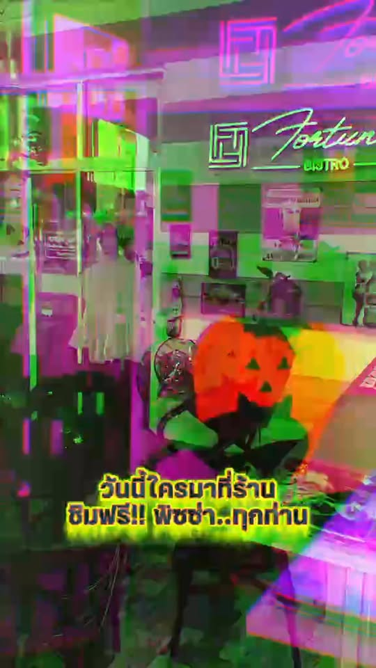

เกี่ยวกับเรา
Our story
About Fortune Bistro
A welcoming spot on Prajak Silapakom Road for Thai and European food, coffee, drinks, and evenings with live music.

Udon Thani
A neighbourhood bistro with a late-night glow
Fortune Bistro brings together Thai comfort food and European favourites under one roof — from morning coffee to dinner plates and a drink while the band plays.
We’re known for a friendly floor team, outdoor seating when you want air, and an easy vibe that works for locals, expats, and travellers passing through Udon Thani.
- Thai & European kitchen
- Breakfast, lunch, and dinner
- Coffee, beer, and cocktails
- Outdoor seating
- Live music evenings
The feel
Food first, music after dark
Daytime is relaxed — meals, coffee, and conversation. When evening arrives, the neon sign lights up and live performers often take the stage.
Follow us on Facebook for event nights, specials, and the latest from the kitchen. Or just walk in — we’re on ถนนประจักษ์ศิลปาคม, easy to find in the city centre area.

People
Glad you’re here
Our team is happy to help with recommendations, table needs, and what’s playing tonight.



Come say hello
Call us or see Visit for the map and hours guidance.